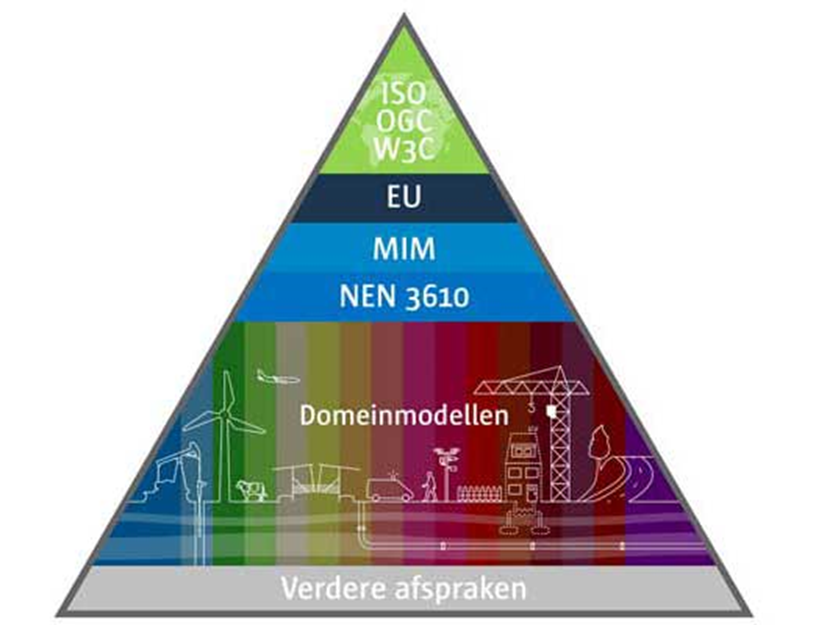

Dit is een consultatieversie. Commentaar over dit document kan gestuurd
worden naar
1. Inleiding
1.1 Samenvatting
Open geo-standaarden zorgen ervoor dat geo-informatie betekenisvol
voor diverse taken en in verschillende softwarepakketten te gebruiken
is. Geonovum ontwikkelt en beheert de Nederlandse basisset van
geo-standaarden voor het vindbaar, toegankelijk, uitwisselbaar en
herbruikbaar maken van geo-informatie. Mensen die in de praktijk
gebruik maken van deze standaarden hebben vragen over de toepassing
ervan, willen weten welke ontwikkelingen er spelen en hebben mogelijk
suggesties voor aanpassingen van deze standaarden. In dit document
worden de verschillende beheeraspecten beschreven zoals
implementatieondersteuning, wijzigingsproces, governance, etc. zodat
iedere organisatie die de basisset geo-standaarden gebruikt hun weg
weten te vinden in de geo-standaarden.
De basisset geo-standaarden kan worden onderverdeeld in:
standaarden voor het beschrijven van geo-informatie,
waaronder informatiemodellen en standaarden voor metadata,
uitwisseling en coördinaatreferentiesystemen. Met deze standaarden
wordt de geo-informatie (data) zelf beschreven;
standaarden voor services, waaronder die voor het serveren
van vector-, raster- en sensordata. Met deze standaarden wordt
beschreven hoe de data geserveerd wordt.
Onder standaarden worden hier niet verstaan praktijkrichtlijnen,
werkafspraken, handreikingen of andersoortige publicaties over de
geo-standaarden. Deze type publicaties gaan in op de toepassing van de
standaarden in de praktijk, de standaarden zelf beschrijven de
vereisten.
1.2 Beheer en doorontwikkeling van de
geo-standaarden
De maatschappij beter laten presteren met geo-informatie. Dat is waar
wij bij Geonovum sinds 2007 dagelijks aan werken. Onze ambitie is een
geodata infrastructuur waarop je letterlijk en figuurlijk kunt bouwen.
Of je nu geo-specialist bent, beleidsregels maakt, een vergunning
aanvraagt of apps bouwt. Wij doen dit door ontwikkelingen rond
geo-informatie te verkennen, door partijen te verbinden en door
gemaakte afspraken in standaarden te verankeren. Dit doen wij in
opdracht van en voor de overheid. Bij de ontwikkeling van standaarden
volgen wij de FAIR principes: geodata moeten Findable (vindbaar) zijn,
Accessible (toegankelijk), Interoperable (interoperabel) en Reusable
(herbruikbaar).
Het beheer van onze standaarden geven wij gestalte en voeren wij uit
in de context van de standaarden, architectuur en voorzieningen en de
gebruikers in de keten. Leidraad in bij het (door)ontwikkelen en
beheren van standaarden is het Beheer en Ontwikkel Model Open
Standaarden:
BOMOS. Geonovum gebruikt BOMOS voor alle standaarden die het in beheer
heeft, om te garanderen dat deze open zijn volgens de definitie die
BOMOS hieraan geeft. De toepassing van BOMOS zorgt er bovendien voor
dat standaarden die Geonovum beheert en ontwikkelt in aanmerking komen
voor plaatsing op de lijst verplichte standaarden en op de lijst met
aanbevolen standaarden van het Forum Standaardisatie. Geonovum heeft
voor het beheer van de geo-standaarden in 2014 van het Forum
Standaardisatie en Nationaal Beraad Digitale Overheid het predicaat
‘uitstekend beheerproces’ ontvangen. Dit beheerplan is ingericht op
basis van de BOMOS activiteiten zoals in
figuur 1 weergegeven.
Figuur 1De structuur van het Beheer- en Ontwikkelmodel voor Open
Standaarden
Governance, visie en financiën zijn de strategische activiteiten voor
het beheer van de geo-standaarden.
2.1 Governance
Geonovum is een overheidsstichting met een onafhankelijk bestuur, een
Raad van Toezicht en een programmaraad. De minister van
Volkshuisvesting en Ruimtelijke Ordening benoemt de leden van onze
Raad van Toezicht. Onze missie, doelen, taken en jaarlijkse
uitvoeringsplan staan op de Geonovum
website. De programmaraad adviseert het bestuur over de inhoud en
prioriteiten voor het basisprogramma en over onze andere
werkzaamheden. De ontwikkeling en het beheer van de geo-standaarden is
een basistaak van Geonovum en is belegd in ons basisprogramma. De
programmaraad treedt op als stuurgroep. De programmaraad beoordeelt en
beslist over deze wijzigingsvoorstellen en stelt een nieuwe (versie)
van de standaard vast van geo-standaarden die bij Geonovum in beheer
zijn. Ook is de programmaraad aanspreekpunt voor
klachten over het beheer van de standaarden
door Geonovum. De
programmaraad
bestaat uit vertegenwoordigers van publieke organisaties in het
geo-werkveld. Zij zijn de voornaamste belanghebbenden van Geonovum.
Jaarlijks adviseert de programmaraad aan het bestuur bindend over de
inhoud van het basisprogramma. De Raad van Toezicht keurt het
uitvoeringsplan, waarin het basisprogramma is opgenomen, goed voordat
het bestuur het uitvoeringsplan vaststelt. Eenmaal per kwartaal
rapporteert Geonovum aan de programmaraad en het bestuur over de
voortgang in het basisprogramma. Samenwerking met andere
standaardisatieorganisaties is onderdeel van de governance. Mocht de
beheertaak van Geonovum voor de basisset geo-standaarden vervallen, dan
zullen de intellectuele eigendomsrechten overgaan naar de nieuwe
beheerder of bij gebrek daaraan aan het Ministerie van Volkshuisvesting
en Ruimtelijke Ordening.
2.2 Visie
Er zijn verschillende standaarden voor het vindbaar, toegankelijk,
uitwisselbaar en herbruikbaar maken van geo-informatie. Elke standaard
speelt een eigen rol en in samenhang toegepast zorgen ze voor de
interoperabiliteit in een geo-informatie infrastructuur. Om
geo-informatie zo laagdrempelig mogelijk te ontsluiten is er in
Nederland de Nationale Geo-Informatie Infrastructuur (NGII). De NGII
als concept is het geheel van datasets (geo-informatie bronnen), data
diensten, metadata, standaarden, voorzieningen, organisatie en
afspraken voor de efficiënte uitwisseling van en toegang tot
geo-informatie. Een vraaggedreven infrastructuur, die de kracht van
geo-informatie laagdrempelig inzetbaar maakt voor de grote
maatschappelijke opgaven is de toekomst. Welke daarbij een rol spelen,
hoe de afzonderlijke ontwikkelingen met elkaar samenhangen en zicht
verhouden tot Europese ontwikkelingen rond data en digitalisering is
beschreven in de
Whitepaper Visie op upgrade Nederlandse Geo-informatie
Infrastructuur(NGII). Het
Raamwerk Geo-Standaarden
helpt daarbij. Het benoemt de internationale en nationale standaarden
die voor Nederland binnen het geo-domein van toepassing zijn voor
aansluiting met andere domeinen. Het raamwerk houdt rekening met
aansluiting op de Europese geo-informatie infrastructuur en borgt
integratie van het geo-informatie domein in de Nederlandse digitale
overheid.
2.3 Financiën
Het beheer van de basisset geo-standaarden is onderdeel van ons
basisprogramma. Dit programma wordt gesubsidieerd door het Ministerie
van Volkshuisvesting en Ruimtelijke Ordening, het Ministerie van
Landbouw, Visserij, Voedselzekerheid en Natuur, het Kadaster en van de
Geologische Dienst Nederland TNO. Jaarlijks wordt bepaald welk deel
van de basisfinanciering besteed wordt aan het standaardisatiewerk en
daarmee het beheer van de basisset geo-standaarden. Over de besteding
van de basisfinanciering leggen wij verantwoording af aan onze
subsidieverleners en via het jaarverslag, inclusief jaarrekening
voorzien van een goedkeurende accountantsverklaring.
3. Tactiek
Community, architectuur, rechtenbeleid, adoptie en erkenning,
kwaliteitsbeleid en benchmarking zijn de tactische activiteiten voor
het beheer van de geo-standaarden.
3.1 Community
Geonovum heeft een onafhankelijke positie als beheerder van de
geo-standaarden. Het ontwikkelen en beheren van standaarden doen wij
open en transparant. Betrokkenheid van de gemeenschap bij de verdere
doorontwikkeling van de geo-standaarden is voor het gebruik en het
draagvlak ervan van groot belang. De geo-standaarden gelden en worden
gebruikt door publieke en private organisaties en bijvoorbeeld
kennisinstellingen. Zij vormen samen de community. Alle publieke en
private stakeholders, hebben inspraak over beheer en ontwikkeling van
de betreffende geo-standaard (in vorm van leveranciers overleggen of
klankbordgroepen) maar zijn niet beslissingsbevoegd. Aan deze inspraak
zijn geen kosten verbonden.
Als er behoefte is aan (verdere) ontwikkeling van een standaard,
stellen we hiervoor een werkgroep in. Werkgroepen staan voor iedereen
open en er volgt altijd een openbare consultatie voor een nieuwe
standaard of nieuwe versie van een standaard. Tijdens het maken van
een standaard betrekken we relevante softwareleveranciers in het
proces om het risico op een implementatiekloof zo klein mogelijk te
houden.
Geonovum informeert en betrekt de geo-community via haar website en
via haar nieuwsbrief ‘De Geostandaard’. Automatisch op de hoogte
blijven kan door aan te melden via de
Geonovum website. Vanuit de community worden (al dan niet ad hoc) werkgroepen gevormd
voor het klankborden over ontvangen verbeterverzoeken en de
ontwikkeling van oplossingen op het moment dat dit nodig is. Geonovum
werkt daarnaast samen met andere standaardisatieorganisaties zowel in
als buiten het geo-informatie domein, bijvoorbeeld Informatiehuis
Water, BIJ12, Logius.
3.2 Architectuur
De overheid beter laten presteren met geo-informatie. Dat is waar
Geonovum dagelijks aan werkt. We doen dat door de toegankelijkheid van
geo-informatie te verbeteren en door de uitwisseling van
geo-informatie onderling en met andere soorten gegevens mogelijk te
maken. Dit doen wij zowel in de context van de Nederlandse
geo-informatie infrastructuur (NGII) als in de context van specifieke
toepassingsdomeinen met standaarden.
3.2.1 Internationale standaarden
Voor de nationale geo-standaarden geldt dat deze ontwikkeld zijn op
basis van internationale standaarden, aangevuld met de voor
Nederland geldende specifieke eisen. Op het moment dat een nationale
standaard (een toepassingsprofiel genaamd) is ontwikkeld, geldt dat
een nationale standaard leidend is. Is er geen nationale standaard,
dan geldt de Europese standaard en als er geen Europese standaard
is, geldt een internationale, wereldwijde standaard.
Internationaal zijn voor Nederland de geo-standaarden afkomstig van
standaardisatie organisaties
ISO/TC 211 Geographic information/Geomatics, het
Open Geospatial Consortium
(OGC) en het
World Wide Web Consortium
(W3C) van groot belang. ISO/TC211 en het OGC maken technische
geo-standaarden, die Nederland semantisch en technisch invult. Deze
geo-standaarden organisaties hebben liaisons met de algemene ICT en
Internet standaardisatie organisaties zoals het W3C. Geonovum
participeert namens Nederland actief in deze drie internationale
standaardisatie organisaties. Ook internationale en nationale
regelgeving heeft impact op de keuze voor standaarden. Vanuit Europa
zijn onder meer de standaarden relevant die vallen onder de Europese
INSPIRE
kaderrichtlijn. Deze richtlijn beschrijft technische afspraken die
uitwisseling van geo-informatie mogelijk maakt over 34 thema’s met
betrekking tot de fysieke leefomgeving en het milieu. De INSPIRE
richtlijn geldt specifiek voor publieke organisaties (de overheid)
van de Europese lidstaten. De INSPIRE standaarden zijn gebaseerd op
internationale geo-standaarden voor het vinden, bekijken en
downloaden van data. De INSPIRE data specificaties voor de thema’s
hebben een duidelijke relatie met de informatiemodellen voor
verschillende domeinen en sectoren in Nederland.
In de afgelopen paar jaren heeft de Europese Commissie (EC) tevens
meerdere wetsvoorstellen m.b.t. digitalisering en data gedaan die de
komende jaren vorm krijgen. Gezamenlijk vormen ze de geopolitieke
positionering ten aanzien van digitalisering en data van de Europese
Unie. Centraal in die propositie is het benutten van de
maatschappelijke waarde van digitalisering en data, en gelijktijdig
het versterken en beschermen van de individuele rechten van burgers.
De voorstellen zijn in 2020 en 2021 gedaan, en zijn vastgesteld dan
wel momenteel in onderhandeling. De bekend gemaakte feitelijke
informatie over de inhoud van de voorstellen, de activiteiten van de
EC, en de bekende tijdslijnen t.a.v. implementatie worden gedeeld in
de
Handreiking EU Informatie m.b.t. digitale en data-strategie.
Tot slot is ook nationale wet- en regelgeving van invloed op het
toepassen van de geo-standaarden, zoals de Nederlandse
basisregistraties en de Omgevingswet. Deze Nederlandse profielen van
standaarden zijn gebaseerd op of opgelijnd met de internationale en
Europese profielen. Het deel van de Nederlandse geo-standaarden
profielen dat zorgt voor het functioneren van de nationale
geo-informatie infrastructuur heeft een aparte positie op de
'pas toe of leg uit'
lijst van verplichte open standaarden van het Forum Standaardisatie
van de Nederlandse digitale overheid. Deze geo-standaarden zijn van
primair belang in het aansluiten van geo-informatie op de digitale
overheid.

Figuur 3Het nationale NEN3610 Basismodel voor geo-informatie
3.2.2 Raamwerk van geo-standaarden
Bij de opzet en ontwikkeling van een geo-informatie infrastructuur
is het de uitdaging om steeds de juiste set standaarden te kiezen.
Het
Raamwerk van Geo-Standaarden
helpt daarbij. Het benoemt de internationale en nationale
standaarden die voor Nederland binnen het geo-domein van toepassing
zijn voor aansluiting met andere domeinen. Het raamwerk houdt
rekening met aansluiting op de Europese geo-informatie
infrastructuur en borgt integratie van het geo-informatie domein in
de Nederlandse digitale overheid. Het Raamwerk van geo-standaarden
is geschreven voor iedereen die geodatasets vastlegt, uitwisselt en
beheert en voor iedereen die informatiebeleid maakt. Het doel van
het Raamwerk van geo-standaarden is om uit de grote verscheidenheid
aan standaarden de juiste set te kiezen: die standaarden die nodig
zijn om geodata vindbaar, toegankelijk, uitwisselbaar en
herbruikbaar te maken. Wij baseren de keuzes voor standaarden in het
Raamwerk op de volgende uitgangspunten: internationale aansluiting,
volwassenheid en openheid van deze geo-standaarden en brede adoptie
en gebruik. Het toepassen van de in dit raamwerk opgenomen
geo-standaarden, draagt bij aan een solide geo-informatie
infrastructuur, in lijn met internationale ontwikkelingen en
aansluitend op de nationale digitale overheid.
3.2.3 Metamodel voor
informatiemodellering
Het
Metamodel voor Informatiemodellering
(MIM) heeft als doel alle informatiemodellen in Nederland nog beter
op elkaar aan te laten sluiten. Het beschrijft de 4 lagen, niveaus
binnen een Informatiemodel:
Niveau 1: Model van Begrippen
Niveau 2: Conceptueel Informatiemodel
Niveau 3: Logisch model of gegevensmodel
Niveau 4: Fysiek of Technisch model
Een typisch Geonovum Informatiemodel bevat in ieder geval niveau 2
en 3 en bij voorkeur ook niveau 1. Niveau 4 wordt gemaakt door de
ontwikkelaar/ bouwer van het systeem waarin ons informatiemodel
wordt gebruikt.
3.2.4 Nederlandse Overheid Referentie
Architectuur
De
Nederlandse Overheids Referentie Architectuur
(NORA) is het interoperabiliteitsraamwerk voor de Nederlandse
overheid en vertaalt daartoe wetgeving, beleid en standaarden naar
architectuurprincipes, beschrijvingen en modellen. Het is een
beschrijving van uitgangspunten voor het inrichten van de
informatiehuishouding van de Nederlandse overheid. NORA is relevant
voor de uitvoering van alle publieke taken door publieke en private
organisaties. De geo-standaarden moeten ook passen binnen de NORA,
de architectuur van alle overheidsorganisaties in Nederland. Ook
principes als
Vindbaarheid,
Toegankelijkheid
en
Transparantie
zijn belangrijk in NORA evenals voor de nationale geo-informatie
infrastructuur. NORA stelt ook de “pas-toe-of-leg-uit” lijst van het Forum Standaardisatie verplicht. Een basisset met
geo-standaarden
staat ook op de 'pas-toe-of-leg-uit' lijst. De vermelding op deze
lijst draagt bij aan de 'verankering' van de geo-standaarden en
geo-informatie infrastructuur in de nationale digitale overheid. Het
Raamwerk van geo-standaarden is een aanvulling op en een verdieping
van het
NORA thema GEO.
3.3 Rechtenbeleid
Het onderwerp rechtenbeleid uit BOMOS vertaalt zich naar
gebruiksvoorwaarden van de producten van de standaarden. Niet alleen
voor de documentatie maar ook voor de technische bestanden. Daarbij
staat centraal dat Geonovum open standaarden ontwikkelt en beheert.
Geonovum hanteert
Creative Commons
om voor de producten van de standaarden aan te geven voor wie op welke
wijze de standaarden beschikbaar zijn. Elk nieuw document dat vanaf 1
januari 2018 door Geonovum wordt gepubliceerd, is voorzien van de
volgende licentie:
https://creativecommons.org/licenses/by-nd/4.0/deed.nl
(kort: CC BY-ND 4.0). In het geval dat (delen van) standaarden zijn
opgenomen in wet- en regelgeving (zoals het geval is bij de RO
Standaarden) dan zijn de gebruiksvoorwaarden van Geonovum niet van
toepassing.
Geonovum dient er zelf voor zorg te dragen dat de documentatie van
onze standaarden digitaal toegankelijk is. Dit is een
gebruiksvoorwaarde die vanuit wet- en regelgeving wordt gesteld.
3.4 Adoptie en erkenning
Het gebruik van de basisset geo-standaarden is niet vanzelfsprekend.
De toepassing ervan in de praktijk is ons uiteindelijke doel.
Werkgroepen zijn hierbij van wezenlijk belang. Voor de adoptie en
erkenning van de geo-standaarden door het werkveld heeft Geonovum
onder andere de basisset geo-standaarden aangeboden aan
Forum Standaardisatie. Zij publiceren lijsten met open standaarden die door hen zijn
goedgekeurd, waaronder
de basisset geo-standaarden. Daarnaast adviseren zij in het gebruik van open standaarden.
We maken geen gebruik van certificering. In samenwerking met
NEN normcommissie 351 240 Geo-informatie
streven wij naar adoptie en erkenning van het Basismodel
Geo-informatie (NEN 3610). Voor NEN 3610 hebben we een
conformiteitstoets.
3.5 Kwaliteitsbeleid en benchmarking
De verbindende kracht van standaardisatie in vindbare, toegankelijke,
uitwisselbare en herbruikbare geo-informatie:
Findable (vindbaar) De eerste stap bij het (her)gebruiken van
data is om de data te vinden. Metadata en data moeten gemakkelijk te
vinden zijn voor zowel mensen als computers. Machineleesbare
metadata is essentieel voor het ontdekken van datasets en services.
Accessible (toegankelijkheid) Zodra de gebruiker de benodigde
gegevens heeft gevonden, moet hij/zij weten hoe deze kunnen worden
geraadpleegd, inclusief authenticatie en autorisatie.
Interoperable (interoperabel) De gegevens moeten meestal
worden geïntegreerd met andere gegevens. Bovendien moeten de
gegevens samenwerken met applicaties of workflows voor analyse,
opslag en verwerking.
Reusable (herbruikbaar) Het uiteindelijke doel van FAIR is
het hergebruik van data te optimaliseren. Om dit te bereiken moeten
metadata en data goed worden beschreven, zodat ze in verschillende
situaties kunnen worden gerepliceerd en/of gecombineerd.
Op basis van de kwaliteitsinstrumenten van BOMOS werken we verder aan
de kwaliteit van de standaarden en het beleid dat toeziet op de
kwaliteit van implementaties van de geo-standaarden.
4. Operationeel
Initiatie, wensen en eisen, ontwikkeling, uitvoering, documentatie en
hulpmiddelen zijn onderdeel van de operationele activiteiten voor het
beheer van de geo-standaarden.
4.1 Initiatie
Initiatie gaat over nieuwe ontwikkelingen in het geo-informatiedomein
die beslag krijgen in de basisset geo-standaarden. Identificatie van
nieuwe ideeën voor bijvoorbeeld een nieuwe specificatie of een
Nederlands profiel van een internationale standaard en alle
activiteiten die horen bij het succesvol optuigen daarvan behoren tot
initiatie. De leden van het standaardenteam van Geonovum maar ook ons
netwerk signaleren de nieuwe ontwikkelingen. Als Geonovum nemen
wij deel aan de werkgroepen van internationale standaarden om deze te
vertalen naar het Nederlandse geo-informatiedomein. Ook zetten wij
zelf testbeds en hackatons in om nieuwe ontwikkelingen te verkennen.
4.2 Wensen en eisen
Standaarden in beheer en gebruik ontwikkelen zich door.
Belanghebbenden, gebruikers van de standaard, kunnen bij Geonovum
wijzigingsverzoeken
indienen
variërend van wensen tot eisen. Op basis van het
wijzigingsprotocol geo-standaarden
nemen wij de wijzigingsverzoeken in behandeling en voeren wij ze door.
Het wijzigingsprotocol is alleen van toepassing op de basisset
geo-standaarden die in beheer zijn bij Geonovum:
Basismodel geo-informatie (NEN 3610);
Geography Markup Language (GML);
GeoPackage;
Nederlandse metadataprofielen voor geografie en services;
OGC API Features
OGC API Tiles;
Het wijzigingsprotocol geo-standaarden is ook van toepassing op elke
nieuwe standaard die door Geonovum als basis geo-standaard wordt
geclassificeerd, mits Geonovum deze in beheer heeft. Het
wijzigingsprotocol geo-standaarden is niet van toepassing op de
domeinstandaarden die Geonovum in beheer heeft; iedere domeinstandaard
in beheer bij Geonovum heeft een eigen wijzigingsprotocol dat in lijn
is met het wijzigingsprotocol geo-standaarden.
Wijzigingsverzoeken worden gebundeld tot een wijzigingsvoorstel. Het
wijzigingsprotocol geeft richting aan het wijzigingsproces dat het
wijzigingsvoorstel doorloopt tot het vaststellen van de nieuwe X- of
Y-versie van de standaard door de programmaraad, zie
figuur 2. Z-wijzigingen worden
door Geonovum zelf uitgevoerd zonder tussenkomst van de programmaraad.
Onderdeel van het wijzigingsproces is versiebeheer.
Een standaard kent verschillende levensfasen, zie
figuur 5. Iedere standaard in beheer kent deze levensfasen. Vanaf de
implementatie/ groeifase is de standaard in beheer en ontwikkelt zich
deze door. Bij de doorontwikkeling van de standaard doorloopt het
wijzigingsproces stappen Inhoud, Toetsing, Besluitvorming en
Implementatie. Het wijzigingsproces alsook het releasebeleid en
versiebeheer zijn toegelicht zijn toegelicht in het
wijzigingsprotocol geo-standaarden. De hulpmiddelen die het IMEV beheerteam inzet, zijn benoemd in de
volgende paragraaf uitvoering.
Voor de uitvoering van het beheer en de doorontwikkeling van de
geo-standaarden zet Geonovum adviseurs geo-standaarden,
informatiemodelleurs en communicatieadviseurs in. Onder leiding van de
projectleider van het basisprogramma worden de werkzaamheden in het
standaardenteam jaarlijks verdeeld. De leidraad daarbij is:
De prioriteiten van het standaardenteam worden afgestemd met de
programmaraad van Geonovum;
Het basisprogramma faciliteert verbinding tussen de beheeropdrachten
en projecten van Geonovum, zowel op inhoud als op werkwijze en
tooling voor het ontwikkelen van standaarden;
Het basisprogramma volgt en neemt deel aan relevante internationale
standaardisatieorganisaties;
Het basisprogramma identificeert en verkent innovaties met mogelijke
relevantie voor het geo-werkveld;
Toetsing doen wij samen met gebruikers- en expertgroepen.
Wij gebruiken hierbij de volgende hulpmiddelen en tooling. De
Geonovum website
is de centrale toegang om in contact te komen met Geonovum en informatie
in te winnen over ons werk: Geonovum verbindt, verkent en verankert. Dit
betekent dat nieuwe opdrachten, nieuwe werkzaamheden, nieuwe thema’s via
de Geonovum website worden ontsloten en alleen bij hoge uitzondering en
een degelijke onderbouwing er een nieuwe separate website wordt
ontwikkeld. De publieke werk- en ontwikkelomgeving van de standaarden en
de producten van de standaarden is de
Geonovum GitHub. Geonovum gebruikt voor de standaarden en de producten van de
standaarden die wij ontwikkelen en beheren zogenoemde publicatieservers.
Deze publicatieservers gelden als bronlocatie voor de producten van onze
standaarden en zijn vindbaar. De publicatieservers zijn:
Technisch register: Publiceren van technische bestanden, behorend bij standaarden ten
behoeve van implementatieondersteuning. Het technisch register is de
centrale vindplaats voor de informatiemodellen uit het NEN3610
stelsel, plus de technische standaarden die bij die
informatiemodellen horen.
Conceptenbibliotheek: Publiceren van semantische begrippen uit informatiemodellen. In
de conceptenbibliotheek zijn de definities van concepten die
gebruikt worden in NEN3610 informatiemodellen opgenomen, waarmee wij
harmonisatie en integratie bevorderen. Ten behoeve van de
conceptenbibliotheek hebben we een
testomgeving van de conceptenbibliotheek.
Documenten register: Publiceren van formele versies (consultatieversie, versie ter
vaststelling, vastgestelde versie) van standaarden en eindversies
van bijv. documentatie (type: document ‘GN-BASIS’). Door eenduidige,
eenmalige bronlocatie van de (technische) documentatie van de
standaarden die wij ontwikkelen en beheren in ReSpec (HTML) formaat,
zijn de standaarden goed vindbaar op een persistente URI, voor zowel
actieve als archiefversies. Met deze werkwijze voorkomen we het
werken met oude kopieën (gebruik “standaarden bij de bron”).
Daarnaast is de levensloop van standaarden volledig transparant.
Ontologieën register: Publiceren van ontologieën die zijn afgeleid van
informatiemodellen die wij beheren.
4.5 Documentatie
De volgende types documentatie worden door Geonovum gebruikt bij de
ontwikkeling en het beheer van standaarden.
Norm (no) Een norm is bij een officieel standaardisatie
instituut ondergebracht en bevat bindende afspraken. Naast het
gebruik van normen is NEN 3610 de enige norm waar Geonovum een
inhoudelijke verantwoordelijkheid heeft. Het formele beheer en
beslissingen worden genomen in de NEN normcommissie 351 240 waar
Geonovum de voorzitter van is. NEN is een normalisatie instituut.
NEN is net als Geonovum een stichting en kan daarmee geen juridische
status toekennen aan normen. Het verwijst vooral naar de status die
de NEN heeft vanuit de overheid en in het werken vanuit lidstaten.
Standaard (st) Een document met (bindende) afspraken.
Overkoepelende term voor de verschillende types standaarden. Normen
zijn in principe niet meer bindend dan standaarden.
Informatiemodel (im) Een standaard waarbij door de term
informatiemodel te hanteren wordt aangegeven dat het een abstractie
(het model) vormt van de werkelijkheid zoals beschreven binnen een
bepaalde sector/domein. Informatiemodellen zijn een semantische
invulling van normen voor sectoren zoals ruimtelijke ordening,
kabels en leidingen, water, etc..
Praktijkrichtlijn (pr) Praktijkrichtlijnen zijn producten die
informatie geven, vaak met een technisch karakter, die nodig is voor
het toepassen van standaarden. Een praktijkrichtlijn hoort altijd
bij een standaard/norm.
Best Practice(bp) Best Practices zijn vergelijkbaar
met prakrijkrichtlijnen. (Niet) normatieve Informatie over het
toepassen van standaarden in de prakrijk. Een Best Practice hoort
altijd bij een standaard.
Handreiking (hr) Op zichzelf staande documentatie dat als
doel heeft een hulpmiddel te zijn, niet verplichtend maar
ondersteunend.
Werkafspraak (wa) Legt uit hoe wetgeving moet worden
toegepast bij onduidelijkheden, discrepanties of fouten in de
standaarden.
Algemeen(al) Op zichzelf staande algemene
documentatie over standaarden. De documentatie betreft niet een
specifieke standaard of onderdeel daarvan, het is ook geen
beheerdocumentatie van een specifieke standaard.
Beheerdocumentatie(bd) Documentatie met betrekking
tot het beheerproces van de standaard. Deze documentatie betreft
niet een standaard of onderdeel daarvan, zoals een handreiking of
werkafspraak. Dit kan interne gerichte documentatie zijn voor
vastleggen van stappen in het dagelijkse werkproces, planning of hoe
de helpdesk werkt. Ook kan dit een beheerplan of handboek zijn. Als
dit soort documentatie publiekelijk beschikbaar wordt gesteld, dan
gebeurt dit door middel van ReSpec.
5. Implementatieondersteuning
Helpdesk, opleiding van gebruikers, module ontwikkeling, pilots,
validatie en certificatie zijn de
implementatieondersteuningsactiviteiten voor het beheer van de
geo-standaarden.
5.1 Helpdesk
Voor Geonovum als beheerder van standaarden heeft de helpdesk een
belangrijke signaalfunctie. Doordat de mensen werken met de standaard
via software waar de standaard in is geïmplementeerd, heeft men
vragen. Voor antwoord op deze vragen is er documentatie maar kan ook
gebruik worden gemaakt van de helpdesk. Voor vragen, wensen en eisen,
klachten en incidenten over een standaard in beheer bij Geonovum
kunnen alle gebruikers en belanghebbenden per mail bij Geonovum
terecht. Wij hebben geen klant contact centrum (KCC) voor het
ontvangen en beantwoorden van vragen. De Geonovum website is voor ons
de centrale ingang om informatie te delen over de standaarden. Hier
vind je hoe je met ons contact kan opnemen. Een overzicht van de
Geonovum helpdesks is hier ook te vinden. Voor de basis
geo-standaarden kunnen vragen altijd per e-mail aan Geonovum worden
gesteld via
geostandaarden@geonovum.nl. Via het
Geoforum kunnen
vragen aan het netwerk worden gesteld. OOK Geonovum beantwoordt vragen
op het Geoforum.
Geonovum heeft voor de verschillende standaarden in ontwikkeling en
standaarden in beheer een aantal helpdesks. Hoewel geldt dat er voor
iedere standaard een eigen helpdesk is, zijn er generieke afspraken
over de helpdesk procedure. Ons beleid: no wrong door, wat betekent
dat wij de vraagsteller altijd van antwoord voorzien en verder helpen.
Onze helpdesk is 24 uur per dag bereikbaar via mail. Het beheerteam
reageert binnen 2 werkdagen op de melding. Binnen 5 werkdagen na de
eerste reactie ontvangt de vraagsteller antwoord. Tijdens officiële
feestdagen is de helpdesk gesloten, tijdens de kerstvakantie kan de
bezetting per helpdesk verschillen. Wensen en eisen via de helpdesk
binnengekomen worden door het beheerteam op de wensen en eisen lijst
in Jira geplaatst, die inzichtelijk is via de Geonovum website. Veel
gestelde vragen delen we via nieuwsbrieven en de Geonovum website.
5.2 Opleiding (van gebruikers)
Geonovum heeft geen generiek advies- en opleidingstraject omdat dit
maatwerk is per standaard. In het algemeen richten we ons op het
trainen van de trainers en het verzorgen van informatiebijeenkomsten
en workshops om kennis te delen met het werkveld waarbij het gebruik
van de standaarden een centrale rol speelt. Tijdens de Open Geodag
nemen we ons netwerk mee in de ontwikkelingen op het gebied van
geo-informatie.
5.3 Module ontwikkeling
Module ontwikkeling wordt ingezet voor het stimuleren van de
ontwikkeling van breed te verspreiden softwaremodules die de standaard
implementeren. Dit kan door het stimuleren van de markt om software te
ontwikkelen, of, als de markt niet beweegt, zelf software te
ontwikkelen en te verspreiden om de markt in beweging te krijgen. Voor
nieuwe ontwikkelingen op gebied van de geo-standaarden stimuleren wij
soms softwareontwikkeling door een open testbed uit te zetten waar
verschillende partijen op basis van open source softwaremodules
ontwikkelen om gebruik en bruikbaarheid van de nieuwe ontwikkeling te
onderzoeken. In OGC verband financieren wij ook soms op kleine schaal
implementatie van internationale standaarden in open source software.
5.4 Pilots en testbeds
Proeven met de implementatie van de specificaties van nieuwe
standaarden of de doorontwikkeling van de standaard. We zetten de
pilots en testbeds met name in om ervaring op te doen en het gebruik
van de standaarden te stimuleren. We doen dit in samenwerking met het
netwerk en de gebruikers van de standaarden.
5.5 Validatie en certificatie
Na het opleveren van de nieuwe standaard inclusief de verschillende
producten, richten wij ons op de implementatie ondersteuning van de
standaard door softwareleveranciers, beheerders van voorzieningen/
registers: dit is implementatie ondersteuning vanuit optiek van het
gebruik van de standaard in de praktijk. Bij deze groep gebruikers is
de ondersteuning vooral technisch van aard. De validator is het
hulpmiddel bij uitstek hierbij. De validatieregels zijn een van de
producten van de standaard. De validator is een tooling die doorgaans
bij een voorziening / register van dezelfde keten wordt beheerd.
Geonovum beheert ten behoeve van de Nederlandse profielen voor
datasets (ISO-19115) en services (ISO-19119) deze twee
validators:
Certificatie van een organisatie of product is door Geonovum zelden
uitgevoerd. Voor NEN3610 hebben we een conformiteitstoets om
onderliggende domeinmodellen te toetsen op NEN3610. Bij een nieuwe
versie van NEN3610 ontwikkelen we ook de conformiteitstoets door. Er
is dan een testprotocol voor een conformiteitstoets beschikbaar
gesteld, waarmee (handmatig) kan worden gecontroleerd of een
implementatie aan de norm voldoet. In hoofdstuk 6 van
NEN3610:2022
is informatie rondom conformiteit opgenomen.
6. Communicatie
Publicatie, promotie en escalatie- en klachtenafhandeling zijn de
communicatie activiteiten voor het beheer van de geo-standaarden.
Geonovum is in brede zin zichtbaar en bereikbaar voor
alle gebruikers van de standaarden en dat doen wij door middel
van:
Onder publicatie verstaan we het vrij toegankelijk op internet
publiceren van de relevante documentatie van en over de
geo-standaarden. De documentatie kan voorkomen in presentatieformaten
(zoals HTML) en als in technische formaten (zoals XML en JSON) ten
behoeve van implementatie van de standaard. Het standaardenteam van
Geonovum draagt zorg voor de ontsluiting van deze documentatie via de
verschillende kanalen voor de gebruikers van de geo-standaarden. De
Geonovum website
is de centrale toegang om in contact te komen met Geonovum en
informatie in te winnen over de geo-standaarden. De publieke
ontwikkelomgeving van de standaarden en de producten van de
standaarden is de
Geonovum GitHub. Geonovum gebruikt voor de standaarden en de producten van de
standaarden die wij ontwikkelen en beheren zogenoemde
publicatieservers. Deze publicatieservers gelden als bronlocatie voor
de producten van onze standaarden en zijn vindbaar. De
publicatieservers zijn:
Technisch register: Publiceren van technische bestanden, behorend bij standaarden ten
behoeve van implementatieondersteuning. Het technisch register is de
centrale vindplaats voor de informatiemodellen uit het NEN3610
stelsel, plus de technische standaarden die bij die
informatiemodellen horen.
Conceptenbibliotheek: Publiceren van semantische begrippen uit informatiemodellen. In
de conceptenbibliotheek zijn de definities van concepten die
gebruikt worden in NEN3610 informatiemodellen opgenomen, waarmee wij
harmonisatie en integratie bevorderen.Ten behoeve van de
conceptenbibliotheek hebben we een
testomgeving van de conceptenbibliotheek.
Documenten register: Publiceren van formele versies (consultatieversie, versie ter
vaststelling, vastgestelde versie) van standaarden en eindversies
van bijv. documentatie (type: document ‘GN-BASIS’). Door eenduidige,
eenmalige bronlocatie van de (technische) documentatie van de
standaarden die wij ontwikkelen en beheren in ReSpec (HTML) formaat,
zijn de standaarden goed vindbaar op een persistente URI, voor zowel
actieve als archiefversies. Met deze werkwijze voorkomen we het
werken met oude kopieën (gebruik “standaarden bij de bron”).
Daarnaast is de levensloop van standaarden volledig transparant.
Ontologieën register: Publiceren van ontologieën die zijn afgeleid van
informatiemodellen die wij beheren.
6.2 Promotie
Is een (nieuwe versie van de) geo-standaard eenmaal vastgesteld, dan
kan hij in gebruik worden genomen. De belangrijkste
communicatiefunctie in deze fase is promotie van de standaard. Ter
promotie van de standaarden zetten wij verschillende middelen in. De
belangrijkste zijn (online) werksessies, presentatie en publicaties.
Rond nieuwe standaarden en rond grote wijzigingen brengen wij
persberichten uit en schrijven wij artikelen voor de vakbladen. Andere
publicatiemiddelen die we inzetten zijn: factsheets (wat is de
standaard, wat kan je ermee, hoe voer ik hem in), interviews met
gebruikers in bijvoorbeeld het jaarverslag van Geonovum, externe
publicaties, etc.
6.3 Escalatie- en klachtenafhandeling
Escalatie- en klachtenafhandeling betreft het garanderen van het
serieus nemen van klachten en deze volgens een zorgvuldige procedure
te behandelen. Klachten kunnen ook beschouwd worden als
verbetersuggesties. We doorlopen een escalatieprocedure als er een
wijziging van de standaard noodzakelijk is die niet in het reguliere
wijzigingsproces op basis van het
wijzigingsprotocol geo-standaarden
doorgevoerd kan worden, omdat dit te lang duurt. Een
uitputtende lijst met situaties en criteria wanneer dit van toepassing
is, valt op voorhand niet te geven. Maar voor de beeldvorming: het
gaat om situaties waarbij het niet doorvoeren van een bepaalde
noodzakelijke wijziging leidt tot onaanvaardbare risico's voor de
uitvoeringspraktijk of het onmogelijk uitvoeren (vanwege bijvoorbeeld
tegenstrijdige wetten) van werkzaamheden. De escalatieprocedure wordt
niet gebruikt om reguliere wijzigingen sneller door te kunnen voeren.
6.3.1 Sturende principes bij escalatie
Er wordt geen vast proces gegeven om de escalatieprocedure te
doorlopen, omdat verschillende situaties wellicht tot een
verschillende wijze van handelen moeten leiden. In plaats daarvan
zijn onderstaande sturende principes leidend om
verantwoordelijkheden te duiden.
Signalering
Uit het werkveld kunnen signalen ontstaan dat er met spoed iets
gewijzigd zou moeten worden. Het is vooraf niet aan te geven uit welke
kanalen deze geluiden zullen ontstaan. Het is wel van belang om de rol
van Geonovum te onderkennen als antennefunctie voor het werkveld. In
ieder geval zullen deze signalen op enig moment de opdrachtgever of
Geonovum bereiken, en op dat moment zal er overleg gevoerd worden over
deze signalen.
Overleg
Bij de besluitvorming binnen de escalatieprocedure wordt er in
principe overleg gevoerd tussen de programmaraad (opdrachtgever voor
het beheer van de geo-standaarden) en Geonovum. Beide partijen
raadplegen de betrokkenen daar waar nodig.
Besluitvorming
De beoordeling of de escalatieprocedure van toepassing is, wordt
genomen door de voorzitter van de programmaraad dan wel de
contactpersoon bij de programmaraad die beheeropdracht monitort. Ook
het besluit welke wijzigingen er precies doorgevoerd moeten
worden en op welke manier, wordt genomen door dezelfde persoon.
Coördinatie
De coördinatie tijdens de escalatieprocedure wordt uitgevoerd door de
voorzitter de programmaraad dan wel de contactpersoon bij de
programmaraad.
Communicatie met het werkveld
De communicatie met het werkveld wordt uitgevoerd door Geonovum. Als
beheerder van de geo-standaarden wordt verwacht dat Geonovum het meest
directe contacten heeft met het werkveld.
6.3.2 Klachtenafhandeling
Het garanderen van het serieus nemen van klachten kan alleen, door
deze volgens een zorgvuldige procedure te behandelen. Klachten
kunnen ook beschouwd worden als verbetersuggestie. We onderscheiden
daarom twee verschillende type klachten met betrekking tot de
standaarden:
Klachten over de toepassingsmogelijkheid van de standaard;
Klachten over het beheer van de standaard.
In het eerste geval is het feitelijk geen klacht maar een wens of
eis tot het aanpassen van de betreffende geo-standaard. De
verantwoordelijke bij Geonovum voor het basisprogramma neemt de
klacht in behandeling en de klacht wordt vastgelegd als
wijzigingsverzoek en niet als klacht. In dit geval doet Geonovum
haar werk goed. In het tweede geval is er sprake van ontevredenheid
over de uitvoering van het beheerproces van de geo-standaard en
betreft het niet de inhoud, de standaard zelf. De indiener is van
mening dat Geonovum, het standaardenteam, dan wel een medewerker van
Geonovum het werk niet naar behoren uitvoert. In dat geval wordt de
klacht doorgezet naar de programmaraad.
De route van indienen van klachten is bij Geonovum in principe via
de helpdesk van de betreffende standaard. Dit is de manier om met
Geonovum in contact te komen, vragen te stellen en wensen en eisen
met betrekking tot de standaard kenbaar te maken. Door het via een
helpdesk te laten verlopen registreren de type issues. De helpdesk
route voor zowel vragen, wijzigingsverzoeken, klachten en incidenten
geeft een zo compleet mogelijk overzicht in het contact met de
gebruikers van de standaarden, over de standaarden.